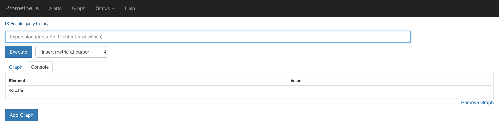

安装Prometheus Server
Prometheus基于Golang编写，编译后的软件包，不依赖于任何的第三方依赖。用户只需要下载对应平台的二进制包，解压并且添加基本的配置即可正常启动Prometheus Server。
从二进制包安装
对于非Docker用户，可以从https://prometheus.io/download/找到最新版本的Prometheus Sevrer软件包：
export VERSION=2.4.3
curl -LO https://github.com/prometheus/prometheus/releases/download/v$VERSION/prometheus-$VERSION.darwin-amd64.tar.gz
解压，并将Prometheus相关的命令，添加到系统环境变量路径即可：
tar -xzf prometheus-${VERSION}.darwin-amd64.tar.gz
cd prometheus-${VERSION}.darwin-amd64
解压后当前目录会包含默认的Prometheus配置文件prometheus.yml:
# my global config
global:
scrape_interval: 15s # Set the scrape interval to every 15 seconds. Default is every 1 minute.
evaluation_interval: 15s # Evaluate rules every 15 seconds. The default is every 1 minute.
# scrape_timeout is set to the global default (10s).
# Alertmanager configuration
alerting:
alertmanagers:
- static_configs:
- targets:
# - alertmanager:9093
# Load rules once and periodically evaluate them according to the global 'evaluation_interval'.
rule_files:
# - "first_rules.yml"
# - "second_rules.yml"
# A scrape configuration containing exactly one endpoint to scrape:
# Here it's Prometheus itself.
scrape_configs:
# The job name is added as a label `job=<job_name>` to any timeseries scraped from this config.
- job_name: 'prometheus'
# metrics_path defaults to '/metrics'
# scheme defaults to 'http'.
static_configs:
- targets: ['localhost:9090']
Prometheus作为一个时间序列数据库，其采集的数据会以文件的形式存储在本地中，默认的存储路径为data/，因此我们需要先手动创建该目录：
mkdir -p data
用户也可以通过参数--storage.tsdb.path="data/"修改本地数据存储的路径。
启动prometheus服务，其会默认加载当前路径下的prometheus.yaml文件：
./prometheus
正常的情况下，你可以看到以下输出内容：
level=info ts=2018-10-23T14:55:14.499484Z caller=main.go:554 msg="Starting TSDB ..."
level=info ts=2018-10-23T14:55:14.499531Z caller=web.go:397 component=web msg="Start listening for connections" address=0.0.0.0:9090
level=info ts=2018-10-23T14:55:14.507999Z caller=main.go:564 msg="TSDB started"
level=info ts=2018-10-23T14:55:14.508068Z caller=main.go:624 msg="Loading configuration file" filename=prometheus.yml
level=info ts=2018-10-23T14:55:14.509509Z caller=main.go:650 msg="Completed loading of configuration file" filename=prometheus.yml
level=info ts=2018-10-23T14:55:14.509537Z caller=main.go:523 msg="Server is ready to receive web requests."
使用容器安装
对于Docker用户，直接使用Prometheus的镜像即可启动Prometheus Server：
docker run -p 9090:9090 -v /etc/prometheus/prometheus.yml:/etc/prometheus/prometheus.yml prom/prometheus
启动完成后，可以通过http://localhost:9090访问Prometheus的UI界面：
